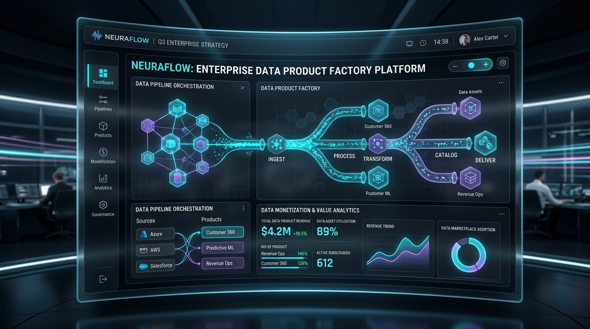

Data Works는 기업 내 스키마, 데이터셋, 리포트를 수집하여 준비도 평가, AI Product Canvas 생성, 컴플라이언스 승인 증적(Evidence Pack), 런타임 API 배포까지 데이터 수익화를 일괄 자동화합니다.

단순 데이터 조회를 넘어 비즈니스 가치 창출과 규제 준수를 완벽히 결합한 팩토리 시스템
스키마, 최신성, 샘플, 결측률, 민감도 및 API 준비도를 100점 기준으로 자동 정밀 평가합니다.
업종 및 고객군 니즈를 분석하여 상품 아이디어, 고객 시나리오, 가격 및 리스크 검토서를 자동 작성합니다.
데이터 오너, 법무, 보안 승인을 매트릭스로 연결하고 감사 가능한 JSON Evidence Pack으로 보관합니다.
민감 정보(개인신용정보/가명정보) 및 risk_score >= 70 상품의 준비도/승인 미비 시 출식을 자동 차단합니다.
계약별 호출 한도, 유효 기간, 허용 필드(Scope) 및 API 키를 런타임 엔드포인트에 즉시 바인딩합니다.
아이디어부터 출시까지의 전환 퍼널, 팩토리 재실행(Replay) 계보 및 매출/리스크 성과를 한눈에 파악합니다.
단계별 탭을 클릭하여 Data Works가 데이터 자산을 어떻게 파이프라인으로 처리하는지 확인해보세요.
내부 데이터셋/테이블/API를 수집하여 스키마 완결성, 결측률, 최신성, 민감도(Personal/Pseudonymized)를 다각도로 평가합니다.
// Loading payload...고위험(risk_score >= 70) 및 민감 프로필 데이터 상품은 다음 4가지 검증을 필수로 통과해야 합니다.
연결된 모든 원천 자산의 품질 및 준비도 점수가 기준점 이상이어야 합니다.
Data Owner, Legal, Compliance 3개 주체의 승인(Approved/Waived) 증적이 유효해야 합니다.
상품 정의, 리스크 검토 및 계약 조건이 포함된 완결된 JSON Pack이 생성되어야 합니다.
승인 기한이 만료된 증적은 통과로 인정하지 않으며 409 Conflict 오류를 반환합니다.
Data Works 도입 및 운영에 관한 핵심 답변입니다.
Data Works는 기존 게이트웨이 코어, Admin UI, PostgreSQL/SQLite 저장소, ClickHouse 분석 엔진을 그대로 재활용하면서 데이터 상품화 워크플로우에 최적화된 RESTful API 집합을 제공합니다.
risk_score가 70 이상이거나 개인신용정보(personal_credit), 가명정보(pseudonymized) 등 민감 프로필 상품인 경우, 준비도 70점 미만 또는 3대 필수 승인(오너, 법무, 컴플라이언스) 미비 시 409 Conflict 응답을 남기며 출식을 자동 차단합니다.
/admin/dataworks/products/{key}/openapi 엔드포인트를 통해 OpenAPI 규격을 발급받고, /v1/data-products/{key}/query 엔드포인트를 통해 유효한 API Key 및 Entitlement 검증 후 런타임 조회가 수행됩니다.